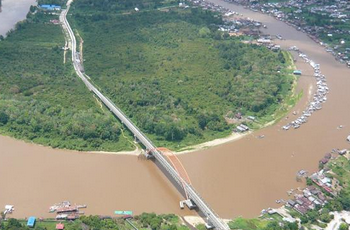

175410130

Nama sungai Kapuas diambil dari nama daerah Kapuas (sekarang Kapuas Hulu) sehingga nama sungai yang mengalir dari Kapuas Hulu hingga muaranya disebut sungai Kapuas, namun Kesultanan Banjar menyebutnya Batang Lawai yang mengacu pada nama daerah Lawie atau Lawai (sekarang Kabupaten Melawi) sehingga nama sungai yang mengalir dari Kabupaten Melawi hingga muaranya di sekitar kota Pontianak disebut Sungai/Batang Lawai.
Sungai Kapuas merupakan rumah dari lebih 700 jenis ikan dengan sekitar 12 jenis ikan langka dan 40 jenis ikan yang terancam punah. Potensi perikanan air tawar di sungai Kapuas adalah mencapai 2 juta ton. Hutan yang masih terlindungi dengan baik menyebabkan sungai Kapuas terjaga kelestariannya.